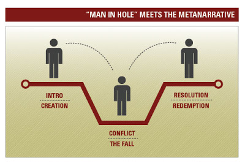

Introduction
The garden of forking paths by Jorge Borges (1962) creates an obscure twist to a story, where the reader keeps pondering what would occur next. “This is a detective story in which the reader is the detective” (Borges, 1962).
Set during the first world war, this nonlinear story conceptualises times as an infinite and expansive commodity. The detective in the story occasionally but purposefully references other various lost or ancient writings like the Annals of Tacitus, “Attacked” by Liddel Hart, and the Lost Encyclopaedia, which are seemingly ‘found on’ or possessed by distinct individuals.
Meta-narrative
The garden of forking paths is a meta-narrative that brings to awareness the plethora of user experiences afforded by the existence of the infinity of time across the vast universe called the internet, an ever-flourishing web of forking paths, convergencies, and parallel instances.
This short story could easily have been a recurring source of inspiration and a mirror reference in the development of the world wide web. Moreover, we can draw similarities between how the story unfolds and the affordances and constraints of the development of media culture. Way before terms like digital art, and new media art were known, Borges’s story had already begun to explore the bifurcation of narratives and time by highlighting the possibilities of simultaneous realities and the infinity of time.
Dr. Yu Tsun, reveals to an unsuspecting Stephen Albert that he is the descendant of Ts’ui Pen, the creator of the garden of forking paths. The house is filled with European and Asian books. This relates to the inception of the internet, where data geographies excluded African and South American literature and information. From the inception of the internet, theories of data import and export in the development of data geographies have always attempted to access the strengths and weaknesses of different nation’s internet presence. for future development, such research has been used to highlight the effects of information exclusion and the digital divide.
In his work on the global geography of the internet content market, Zook (2001) further argues that a nation’s information content creation is further divided into urban and non-urban presences.
Under the disguise of the collection of books is Ts’ui Pen’s idea of the infinite nonphysical labyrinth. Stephen Albert’s description of Ts’ui Pen’s idea could arguably be the first working definition of the world wide web, even as we know it today. Besides the electronic gadgets (like the PC and the smartphone) that we use as the point of entry to this web, and the physical architecture (like routers and signal towers) the web itself remains nonphysical, yet infinite.
The most interesting part of Ts’ui Pen’s letter is the bold declaration “I live to various future times but not all, my garden of forking paths” This path of the story speaks to the storage capacities of the internet, afforded for by the possibilities of a networked web of computers. In their illustrative work about the internet’s connectivity as a scheme of rhizomes, Deleuze and Guattari (2013) resonates with the illustration of the garden of forking paths by arguing that the internet’s connection provides for a superhighway between the past and the future narratives.
Some scholars have questioned if perhaps this superhighway and the affordances of these forking paths sufficiently carter for accessibility and inclusivity. In their scholarly article called Battle for the soul of the Internet, Elmer-Dewitt and Jackson (1994), contends that the internet, is being overrun by lawyers (selfish rules and regulations), and merchants (advertising and marketing) while the idea of inclusivity is being daily thwarted.
Conclusion
In the garden of forking paths, Stephen makes an analogy that relates to the internet as we know it today, where a character (user) can choose alternatives and simultaneously at the same time. In one pocket of this garden (the internet), a character (the user) can be an enemy to another character, and yet a friend when they meet in a different path, all as if their previous relationship did not exist. True to that, we find multi-players in online games collaborating, whereas they would not necessarily collaborate in other areas like a tweeter thread or even so, in real life. I Argue that these internet affordances create an infinite possibility to different facades of the world which surpasses both propositional logic (true or false) and modal logic (probabilities).
Bibliography
Borges, J. L. (1962). The garden of forking paths. Collected fictions, 119.
Elmer-Dewitt, P., & Jackson, D. S. (1994). Battle for the soul of the Internet. Time, 144(4), 50-56.
Holland, E. W. (2013). Deleuze and Guattari's A thousand plateaus': A reader's guide. A&C Black.
Zook, M. A. (2001). Old hierarchies or new networks of centrality? The global geography of the Internet content market. American Behavioural Scientist, 44(10), 1679-1696.